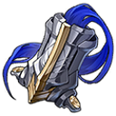
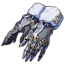
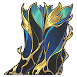

추천 광추
그녀는 두 눈을 감았네
HP +24% · 회복효율 +12%
효과 자세히
자신 HP 감소 → 전원 피해 +9% 2턴. 웨이브 시작 시 전원 각자 손실 HP 80% 회복.
승리의 순간
방어력·효과 명중 +24%
효과 자세히
피격 확률 증가 · 피격 후 자신의 턴 종료까지 방어력 +24% 추가.
기억의 소재
효저 +16% · 피격 시 자가 실드
효과 자세히
실드 없이 피격 → HP 최대치 32% 실드 2턴(재사용 3턴). 실드 중 받는 피해 −24%.
여생의 첫날
방어력 +24% · 팀 속성 저항 +12%
효과 자세히
전투 진입 후 팀 속성 저항 증가. 같은 유형은 중복 적용되지 않음.
랜도의 선택
피격 확률 증가 · 받는 피해 −24%
효과 자세히
다른 아군의 피격을 줄이고 장착자의 내구 보강.
추천 유물
눈보라에 맞서는 철위대 2 + 장수를 원하는 제자 2 · 부러진 용골 2
- 머리

주옵션HP부옵션HP% · 방어력% · 속도 · 효과 저항 - 손

주옵션공격력부옵션HP% · 방어력% · 속도 · 효과 저항 - 몸통
 주옵션HP%부옵션방어력% · 속도 · 효과 저항
주옵션HP%부옵션방어력% · 속도 · 효과 저항 - 다리

주옵션속도 / HP%부옵션HP% (주옵션 제외) · 방어력% · 속도 (주옵션 제외) · 효과 저항 - 구체
 주옵션HP% / 방어력%부옵션HP% (주옵션 제외) · 방어력% (주옵션 제외) · 속도 · 효과 저항
주옵션HP% / 방어력%부옵션HP% (주옵션 제외) · 방어력% (주옵션 제외) · 속도 · 효과 저항 - 매듭
 주옵션에너지 회복효율부옵션HP% · 방어력% · 속도 · 효과 저항
주옵션에너지 회복효율부옵션HP% · 방어력% · 속도 · 효과 저항
이 조합을 추천하는 이유
철위대 받는 피해 −8% · 제자 HP +12%. 용골 효저 30% → 파티 치피 +10%.
눈보라에 맞서는 철위대 2 + 장수를 원하는 제자 2 · 불로인의 선주 2
- 머리 주옵션HP부옵션HP% · 방어력% · 속도 · 효과 저항
- 손 주옵션공격력부옵션HP% · 방어력% · 속도 · 효과 저항
- 몸통
주옵션HP%부옵션방어력% · 속도 · 효과 저항
- 다리 주옵션속도부옵션HP% · 방어력% · 효과 저항
- 구체
 주옵션HP% / 방어력%부옵션HP% (주옵션 제외) · 방어력% (주옵션 제외) · 속도 · 효과 저항
주옵션HP% / 방어력%부옵션HP% (주옵션 제외) · 방어력% (주옵션 제외) · 속도 · 효과 저항 - 매듭
 주옵션에너지 회복효율부옵션HP% · 방어력% · 속도 · 효과 저항
주옵션에너지 회복효율부옵션HP% · 방어력% · 속도 · 효과 저항
이 조합을 추천하는 이유
선주 HP +12% · 속도 120 → 파티 공격력 +8%. 철위대와 제자로 분담 내구 확보.
이 정도면 잘 키웠다
동일 파티·광추 기준 · 조건 [*]
| 스탯 | 추천 스탯 | 준종결 | 종결 |
|---|---|---|---|
| HP [*] 궁관진의 HP 증가를 포함한 전투 수치. | 궁관진 적용 6,500+ | 궁관진 적용 8,000 | 8,000 유지 · 방어력 보강 |
| 방어력 [*] 부현이 받는 연속 분담 피해 대비. | 1,400 | 1,600 | 1,600 유지 · HP 보강 |
| 속도 [*] 선주 장신구 발동은 전투 속도 120. 궁관진 갱신과 필살기 회전 고려. | 120 이상 | 134 선택 | 궁관진 만료 전 갱신 |
육성 단계의 기준
캐릭터·광추 Lv.80 · 5성 유물 +15. 발동 조건은 명시한 수치, 그 외는 육성 목표.
성혼과 추천 돌파
1돌 궁관진 치피 +30% · 2돌 궁관진 중 1회 아군 전투 불능 방지.
1감식 → 파티 치피 +30%추천
사위(司危)
2궁관진 중 치명상 방지·회복추천
전투당 1회 전원 해당 행동 중 전투 불능 방지·각자 최대 HP 70% 회복.
3전투 스킬·특성 +2
스킬·특성 레벨 상한 각각 15.
4궁관진 중 동료 피격 → 에너지 +5pt
격택(格澤)
5필살기 +2 · 일반 공격 +1
필살기·일반 공격 레벨 상한 각각 15·10.
6잃은 HP의 200%만큼 필살기 피해 추가
아군 누적 손실 HP 상한은 부현 최대 HP의 120%. 필살기 사용 후 초기화.
추천 파티


기본 운영과 행적
궁관진과 HP 전환 횟수 유지
전투 스킬로 궁관진 → 만료 전에 재시전 → 필살기로 특성 HP 전환 횟수 보충.
- 적의 광역 공격은 여러 아군의 분담 피해가 부현에게 몰림. HP와 방어력을 함께 확보.
행적 육성 순서
특성 → 전투 스킬 → 필살기·일반 공격
아하 속도 계산기 →기준과 출처 · 2026-11-25
4.7 데이터 · Prydwen 장비 참고 · 자료실 편성 예시